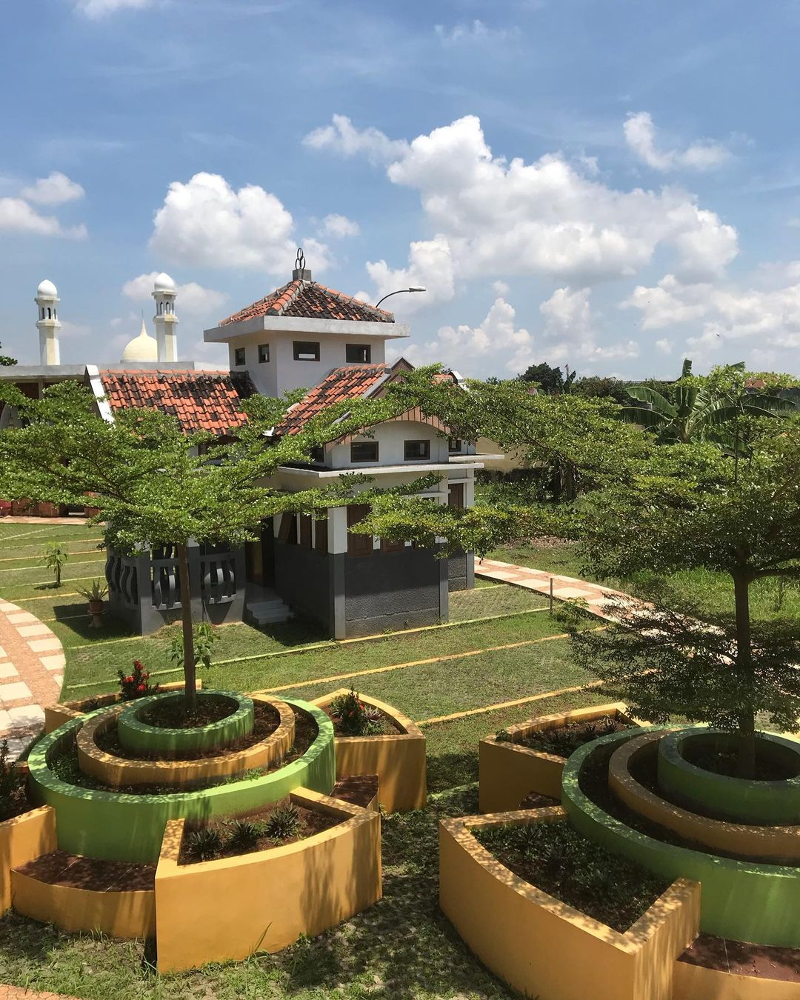

Museum Kretek

Museum Kretek
Museum Kretek

Balai Jagong Kudus
Taman Oasis
Taman Sardi

Taman Celosia

Grey Canyon Kudus
Hill of Vaganza
Waduk Logung

Omah Dongkas

Selam Semliro
River Tubing Jurang
Dandangan Kudus